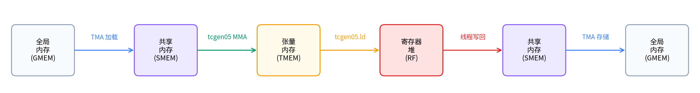

Building a Tiled GEMM#
Overview
Builds a correct tiled GEMM from the TIRx tile primitives, starting from a single output tile.
Step 1 is a single-tile GEMM, Step 2 adds the K-loop accumulation, Step 3 tiles spatially across CTAs for full matrices.
Correctness comes first; performance is the job of the next two chapters.
GEMM is the workload this entire book is built around. It sits under the linear layers, attention projections, and convolutions that dominate a GPU’s time, so the difference between a correct GEMM and a fast one is the difference between leaving most of the chip idle and saturating it.
That gap is too large to cross in one jump. A saturating kernel makes you debug memory movement, accumulation, tiling, and Tensor Core scheduling all at once, with nothing trustworthy to compare against. The safer path is to start from the smallest kernel that produces a correct answer, then grow it one decision at a time.
This chapter writes that first correct tiled GEMM. The previous chapters introduced the TIRx scope / layout / dispatch model in the abstract; here we apply it to a real kernel. We begin with one 128 x 128 output tile and grow it into a kernel that handles full-size matrices, adding K-dimension accumulation and then spatial tiling across many CTAs.
This is the first of three chapters that walk a single GEMM optimization path from end to end. In this one we build a correct tiled kernel and stop there. The next chapter (Pipelining GEMM with TMA) replaces the thread copies with TMA and overlaps data movement with compute through pipelining, and Scaling GEMM with Warp Specialization and Clusters goes further still with warp specialization and CTA clusters. Each chapter builds on the one before it, so the kernels accumulate features rather than start over.
It helps to read each step as an edit to a single contract with three terms: which scope runs the operation, which layout the operand tiles use, and which dispatch path executes it. Most steps have one primary change, so we open them with a small card that names that change and calls out any synchronization detail needed to make the reuse safe. Step 1 establishes the baseline that the rest of the path edits.
GEMM#
GEMM is the dense matrix multiply that sits underneath linear layers, attention projections, and many convolution implementations, which is why a fast GEMM kernel pays off almost everywhere you look. The examples in this tutorial use \(D = A B^{\top}\):
\(A\) has shape \(M \times K\).
\(B\) has shape \(N \times K\).
\(D\) has shape \(M \times N\).
\(D[m,n] = \sum_k A[m,k] \cdot B[n,k]\).
The transpose is not an extra operation we choose to perform; it falls out of how the data is stored. The examples keep \(B\) as \(N\) rows of length \(K\), which is the layout linear-layer weights usually come in, so contracting along \(K\) naturally reads \(B^{\top}\) without any rearrangement.
Throughout the tutorial we measure a kernel by its throughput in TFLOPS, counting the two floating-point operations per multiply-add against the wall-clock time:
GEMM Data Path#
Every optimization in this tutorial comes down to where the data lives and how it moves, so it is worth mapping that out before we write any code. At heart, a Blackwell GEMM kernel is organized around just two activities: moving tiles between memories, and computing on them. The figure below traces a tile through every memory it touches on its way from input to output:

The figure above shows the baseline path that every later optimization edits but never replaces.
Read it from left to right: operand tiles first move from GMEM to SMEM; tcgen05.mma then
consumes the SMEM operands and writes accumulators to TMEM; and finally the epilogue reads TMEM
back into registers before storing the result to GMEM. Keep this chain in mind, because every step
below changes how one of these hops happens; it never changes the hops themselves.
Optimization Path#
The plain data path above is enough to get a correct answer, but it leaves most of the hardware idle. The rest of the tutorial closes that gap by adding Blackwell features one at a time, each one expressed through a TIRx tile primitive. The path we will follow visits these features in turn:
TMA async movement moves GMEM <-> SMEM tiles through Blackwell’s hardware copy path, with barriers tracking completion.
Software pipelining uses multiple SMEM stages so that the data movement for the next K tile can overlap Tensor Core compute on the current one.
Persistent scheduling keeps a fixed pool of CTAs, each processing many output tiles through a tile scheduler, instead of launching one CTA per tile.
Warp specialization splits the producer, MMA consumer, and writeback roles across separate warpgroups.
CTA clusters let two CTAs cooperate on a single, larger Blackwell MMA tile.
Multi-consumer execution uses multiple consumer warpgroups to compute different parts of the tile at once, raising compute density.
Step 1: Sequential Single-Tile GEMM#
The simplest GEMM that still exercises the full hardware path is one that computes a single output tile. So that is where we begin. Step 1 computes one 128 x 128 output tile with K = 64, small enough that nothing has to loop, and every piece of the data path appears exactly once. With nothing repeated, we can see each hop in isolation before we ever have to reason about a loop.
What this step establishes: the baseline
Scope: a single warpgroup of 128 threads walks the whole path in order, one stage after another.
Layout: the A and B tiles live in SMEM, the accumulator in TMEM, and the result is staged out through registers.
Dispatch: synchronous
Tx.copycarries the loads, andtcgen05runs the MMA.
Single-Tile Dataflow#
With the baseline contract fixed, the next thing to pin down is the order in which one tile travels through it. This first kernel walks the core GEMM data path exactly once, the same GMEM -> SMEM -> TMEM -> registers -> GMEM chain from the data-flow figure, with no loop wrapped around it. It allocates its working memory, loads the operands, computes the product, writes the result back, and cleans up after itself:
Allocate: SMEM (pool allocator), TMEM (
tcgen05.alloc), mbarrierLoad: All 128 threads cooperatively copy A and B tiles from GMEM to SMEM (sync
Tx.copy)Compute: Single elected thread issues
Tx.gemm_async+tcgen05.commit; all threads wait on mbarrierWriteback: Warpgroup reads TMEM → registers; each thread casts fp32→fp16 and writes to GMEM
Deallocate: TMEM deallocation
Four Pieces of the First Kernel#
The full kernel is only a few dozen lines, but it is easier to digest in parts. We will read it in four pieces (memory allocation, the synchronous load, the MMA dispatch, and the writeback) and assemble them into one kernel only afterward. The API names that appear along the way are the TIRx tile-primitive vocabulary introduced in Part II (Introduction to TIRx, TIRx Layout API).
Memory allocation. The kernel begins by carving out shared memory for the operands, along with a slot for the TMEM address and an mbarrier:
pool = T.SMEMPool()
tmem_addr = pool.alloc((1,), "uint32") # TMEM address (4 bytes)
mma_bar = pool.alloc((1,), "uint64", align=8) # mbarrier (8 bytes)
pool.move_base_to(1024) # Skip to offset 1024
Asmem = pool.alloc((BLK_M, BLK_K), a_type, layout=A_layout) # 128×64 fp16
Bsmem = pool.alloc((BLK_N, BLK_K), b_type, layout=B_layout) # 128×64 fp16
pool.commit()
Two details here are worth pausing on. The pool.move_base_to(1024) pushes Asmem and Bsmem out to offset 1024, reserving the low addresses for the small pieces of metadata above them so that the bulky operand tiles land on a clean boundary. And layout=A_layout asks tma_shared_layout for a swizzled SMEM placement that both TMA and tcgen05.mma can read directly, exactly the kind of layout-as-contract obligation Part II described.
Synchronous load. With the buffers in place, the operands still have to reach SMEM. In this first version we let the CTA’s own threads do the copying:
Tx.cta.copy(Asmem[:, :], A[:, :])
Tx.cta.copy(Bsmem[:, :], B[:, :])
T.cuda.cta_sync()
Because there is only one tile here (M=N=128, K=64), copying the whole of A and B is the entire load. Tx.cta.copy(...) makes the CTA cooperate on that copy, with each thread responsible for its own slice of the data. The T.cuda.cta_sync() that follows does double duty: it waits for every thread to finish and it publishes their shared-memory writes, so that when the MMA later reads Asmem and Bsmem it sees complete tiles rather than a half-filled buffer. This thread-driven copy is also the very first thing we will replace; the next chapter (Pipelining GEMM with TMA) swaps it out for TMA.
MMA dispatch. With the operands now sitting in SMEM, we can issue the MMA, and we do so from a single elected thread:
if warp_id == 0:
if T.ptx.elect_sync():
Tx.gemm_async(tmem[:, :BLK_N], Asmem[:, :], Bsmem[:, :],
accum=False, dispatch="tcgen05", cta_group=1)
T.ptx.tcgen05.commit(mma_bar.ptr_to([0]), cta_group=1)
The two nested guards narrow the issuer down in two steps. The outer if warp_id == 0 keeps only warp 0 of the warpgroup, and the inner if T.ptx.elect_sync(): then elects a single active lane within that warp. Together they leave exactly one thread to run Tx.gemm_async and tcgen05.commit.
It is worth being clear about what that single thread does and does not mean, because the natural reading is misleading. A single issuing thread does not imply a single-threaded multiply. The computation is still a full tile-level MMA: the hardware performs the cooperative multiply for the tile described by the SMEM operand layouts and the TMEM accumulator layout. The key is that Tx.gemm_async is one tile operation, not one hardware instruction. The K = 64 tile is wider than the hardware MMA K-atom (MMA_K = 16), so this one tile op lowers to a short sequence of raw tcgen05.mma instructions stepped along K, and the warpgroup drives each of them cooperatively. The reason only one thread issues the tile op is that each underlying tcgen05.mma is itself a single-instruction cooperative op: one launch drives that K-atom of the tile MMA. If all 128 threads issued the sequence, the same work would simply be launched 128 times over. Finally, the accum=False flag tells the MMA to overwrite the TMEM destination rather than add into it, which is what we want here, since there is no prior partial sum to extend.
Writeback. The product now sits in TMEM, but the caller wants it back in GMEM as fp16. The epilogue therefore has to bring the result down through registers and cast it along the way:
Dreg = T.alloc_local((BLK_N,), acc_type) # per-thread fp32 register row
Dreg_f16 = T.alloc_local((BLK_N,), d_type) # same row, cast to fp16
Dreg_wg = Dreg.view(128, BLK_N, layout=TileLayout(S[(128, BLK_N) : (1@tid_in_wg, 1)]))
Tx.wg.copy_async(Dreg_wg[:, :], tmem[:, :BLK_N])
T.ptx.tcgen05.wait.ld()
Tx.cast(Dreg_f16[:], Dreg[:])
m_thr = T.meta_var(m_st + warp_id * 32 + lane_id)
Tx.copy(D[m_thr, n_st : n_st + BLK_N], Dreg_f16[:])
The MMA leaves a 128 x 128 fp32 accumulator tile in TMEM. The fp32 is deliberate: GEMM sums many products along K, and keeping the running sum in higher precision holds down the rounding error that would otherwise accumulate. But D is fp16, so the values cannot go straight out. They first land in registers, are narrowed to fp16 there, and only then reach GMEM.
The two register buffers play distinct roles. Dreg is a per-thread buffer of BLK_N elements, while Dreg_wg is a warpgroup-wide view of those same registers under a chosen layout:
TileLayout(S[(128, BLK_N) : (1@tid_in_wg, 1)])
This layout maps the tile’s first dimension onto the warpgroup’s threads: thread 0 owns row 0, thread 1 owns row 1, and so on through row 127. The second dimension stays inside each thread’s own register buffer, so a single thread holds all the columns of its one row. With 128 threads in the warpgroup and 128 rows in the tile, the 128 x 128 output divides neatly into one row per thread.
Reading the accumulator out under that view is precisely what Tx.wg.copy_async(Dreg_wg, tmem) does, and it lowers to the Blackwell TMEM load path, tcgen05.ld. Because that load is asynchronous, T.ptx.tcgen05.wait.ld() has to complete before any thread touches Dreg; otherwise a thread would read registers the load has not yet filled.
Once the wait returns, each thread’s private Dreg[:] holds the fp32 values for its one logical output row. The thread narrows those to fp16 in Dreg_f16, works out which global row it is responsible for,
m_thr = T.meta_var(m_st + warp_id * 32 + lane_id)
and writes D[m_thr, n_st:n_st + BLK_N]. The rows partition cleanly across the four warps: warp 0 writes rows 0-31, warp 1 writes rows 32-63, warp 2 writes rows 64-95, and warp 3 writes rows 96-127.
Complete Kernel#
Now we stitch the four pieces back together into one runnable kernel (M=N=128, K=64). The imports come first:
import tvm
from tvm.script import tirx as T
from tvm.script.tirx import tile as Tx
from tvm.tirx.cuda.operator.tile_primitive.tma_utils import tma_shared_layout, SwizzleMode
from tvm.tirx.layout import TileLayout, S, TLane, TCol, tid_in_wg
The kernel is wrapped in the same hgemm_vX(M, N, K) style that the later steps use. Step 1 runs with M=N=128, K=64, so the launch contains exactly one output tile:
def hgemm_v1(M, N, K):
a_type = tvm.DataType("float16")
b_type = tvm.DataType("float16")
d_type = tvm.DataType("float16")
acc_type = tvm.DataType("float32")
BLK_M, BLK_N, BLK_K = 128, 128, 64
# MMA_M/MMA_N/MMA_K document the underlying hardware MMA tile; they are not
# passed to gemm_async (which derives the MMA shape from the operand and
# accumulator tiles), so the later steps omit them.
MMA_M, MMA_N, MMA_K = 128, 128, 16
A_layout = tma_shared_layout(a_type, SwizzleMode.SWIZZLE_128B_ATOM, (BLK_M, BLK_K))
B_layout = tma_shared_layout(b_type, SwizzleMode.SWIZZLE_128B_ATOM, (BLK_N, BLK_K))
@T.prim_func
def kernel(
A: T.Buffer((M, K), a_type),
B: T.Buffer((N, K), b_type),
D: T.Buffer((M, N), d_type),
):
T.device_entry()
# Step 1 is a single-tile kernel: M = BLK_M and N = BLK_N, so the grid
# is 1x1. Starting with a 1x1 grid keeps the per-CTA tile offsets
# (m_st, n_st) trivially zero; Steps 3+ generalise this to larger M / N.
bx, by = T.cta_id([M // BLK_M, N // BLK_N])
wg_id = T.warpgroup_id([1]) # single warpgroup, so wg_id is always 0 (unused below)
warp_id = T.warp_id_in_wg([4])
lane_id = T.lane_id([32])
# --- SMEM allocation ---
pool = T.SMEMPool()
tmem_addr = pool.alloc((1,), "uint32")
mma_bar = pool.alloc((1,), "uint64", align=8)
pool.move_base_to(1024)
Asmem = pool.alloc((BLK_M, BLK_K), a_type, layout=A_layout)
Bsmem = pool.alloc((BLK_N, BLK_K), b_type, layout=B_layout)
pool.commit()
# --- Barrier + TMEM init (warp 0 only) ---
if warp_id == 0:
if lane_id == 0:
T.ptx.mbarrier.init(mma_bar.ptr_to([0]), 1)
T.ptx.tcgen05.alloc(T.address_of(tmem_addr), n_cols=512, cta_group=1)
T.ptx.fence.proxy_async("shared::cta")
T.ptx.fence.mbarrier_init()
T.cuda.cta_sync()
tmem = T.decl_buffer(
(128, 512), "float32", scope="tmem", allocated_addr=tmem_addr[0],
layout=TileLayout(S[(128, 512) : (1@TLane, 1@TCol)])
)
m_st = T.meta_var(bx * BLK_M)
n_st = T.meta_var(by * BLK_N)
phase_mma: T.int32 = 0
# --- Load: all threads copy global -> shared (synchronous).
# With M=BLK_M and N=BLK_N the slices below cover the full matrices;
# the slice form is kept so the diff to Step 3 (multi-tile) is minimal.
Tx.cta.copy(Asmem[:, :], A[m_st:m_st + BLK_M, :])
Tx.cta.copy(Bsmem[:, :], B[n_st:n_st + BLK_N, :])
T.cuda.cta_sync()
# --- Compute: single elected thread issues MMA ---
if warp_id == 0:
if T.ptx.elect_sync():
Tx.gemm_async(
tmem[:, :BLK_N], Asmem[:, :], Bsmem[:, :],
accum=False, dispatch="tcgen05", cta_group=1
)
T.ptx.tcgen05.commit(mma_bar.ptr_to([0]), cta_group=1)
T.ptx.mbarrier.try_wait(mma_bar.ptr_to([0]), phase_mma)
# --- Writeback: TMEM -> RF -> GMEM ---
Dreg = T.alloc_local((BLK_N,), acc_type)
Dreg_f16 = T.alloc_local((BLK_N,), d_type)
Dreg_wg = Dreg.view(128, BLK_N,
layout=TileLayout(S[(128, BLK_N) : (1@tid_in_wg, 1)]))
Tx.wg.copy_async(Dreg_wg[:, :], tmem[:, :BLK_N])
T.ptx.tcgen05.wait.ld()
Tx.cast(Dreg_f16[:], Dreg[:])
m_thr = T.meta_var(m_st + warp_id * 32 + lane_id)
Tx.copy(D[m_thr, n_st : n_st + BLK_N], Dreg_f16[:])
# --- Deallocate TMEM ---
T.cuda.cta_sync()
if warp_id == 0:
T.ptx.tcgen05.relinquish_alloc_permit(cta_group=1)
T.ptx.tcgen05.dealloc(tmem_addr[0], n_cols=512, cta_group=1)
return kernel
Every GEMM step that follows compiles, runs, and checks itself in the same way, so we spell that scaffolding out in full just once, here, and from then on show only the kernel. To run a later step, drop in its hgemm_vX and the matching problem size in place of the ones below. One caveat is worth remembering: compile a single step per fresh Python session and restart before trying another, since the examples reuse inner names and the compiler holds per-session state.
import torch
target = tvm.target.Target("cuda")
device = torch.device('cuda') # gpu(0)
M, N, K = 128, 128, 64
kernel = hgemm_v1(M, N, K)
with target:
ex = tvm.compile(tvm.IRModule({"main": kernel}), target=target, tir_pipeline="tirx")
torch.cuda.empty_cache()
torch.cuda.synchronize()
A_tensor = torch.randn(M, K, dtype=torch.float16, device=device)
B_tensor = torch.randn(N, K, dtype=torch.float16, device=device)
D_tensor = torch.zeros(M, N, dtype=torch.float16, device=device)
# ex.mod(...) takes torch tensors directly, the same call form used in every chapter.
ex.mod(A_tensor, B_tensor, D_tensor)
D_ref = (A_tensor.float() @ B_tensor.float().T).half()
max_err = float((D_tensor - D_ref).abs().max())
print(f"Max error vs torch reference: {max_err:.6f}")
# Relative tolerance, like the warp-specialization and Flash Attention cells:
# output magnitude grows with K, so a fixed absolute bound would fail at larger K.
torch.testing.assert_close(D_tensor, D_ref, rtol=2e-2, atol=1e-2)
print("PASS")
# Optional timing for larger kernels.
ITERS = 10
for _ in range(3):
ex.mod(A_tensor, B_tensor, D_tensor)
torch.cuda.synchronize()
start = torch.cuda.Event(enable_timing=True)
end = torch.cuda.Event(enable_timing=True)
start.record()
for _ in range(ITERS):
ex.mod(A_tensor, B_tensor, D_tensor)
end.record()
torch.cuda.synchronize()
ms = start.elapsed_time(end) / ITERS
tflops = 2 * M * N * K / ms / 1e9
print(f"Performance: {ms:.3f} ms, {tflops:.1f} TFLOPS")
Steps 1 through 3 run at deliberately small sizes (128×128 here, 256³ in Step 3) to keep these first walkthroughs simple to follow. The cross-step End-to-End Result table at the end of Scaling GEMM with Warp Specialization and Clusters takes the opposite approach: it measures every step, including this Step 1 algorithm, at a single M=N=K=4096 size, so that its speedup ratios are directly comparable.
Limits of the Single-Tile Kernel#
This kernel is correct, which was the whole point of Step 1, but it is correct only in a very narrow setting. Four limitations are baked in on purpose, and the rest of the optimization path lifts them one at a time:
It handles only a single K tile, so it cannot contract over a large K.
It handles only a single output tile, so M and N are pinned to 128.
It uses synchronous GMEM -> SMEM copies rather than TMA.
It does not overlap data movement with compute, so the two never run at once.
Step 2: K-Loop Accumulation#
The first limit to remove is the smallest one. Step 1 handles only a single 64-wide K tile, yet real matrices contract over far more than that. In Step 2 we keep the single output tile but let K span many 64-wide chunks.
The idea is straightforward: repeat the load -> MMA -> wait sequence once per chunk, and let each MMA accumulate into the same TMEM slot. The real work, it turns out, is in the synchronization. Reusing one mbarrier across iterations introduces this chapter’s first genuine correctness hazard. If the code tracks the wrong phase, a wait can return before its MMA has actually finished, silently corrupting the result. The mechanics below show exactly how that goes wrong, and how to avoid it.
What this step changes: Layout reuse
Scope: unchanged, still a single warpgroup.
Layout/reuse: the same SMEM tile pair and TMEM accumulator slot are reused across the K-loop. No new storage is allocated; the operand tiles stream through one fixed pair of buffers, and the accumulator state stays in one TMEM slot.
Synchronization: the reused MMA barrier must advance through the right phase on every K chunk, or a later wait can observe an earlier completion.
Dispatch: unchanged.
K-Loop Mechanics#
Step 1 contracted over a single 64-wide K tile; here we keep its single output tile but let K run as long as the matrices demand. To cover a K larger than 64, we walk K in chunks of BLK_K=64. Each iteration loads the next A and B K-slice into SMEM and issues Tx.gemm_async. The accum flag is what stitches these chunks together into one dot product: on the first chunk, accum=False initializes the TMEM accumulator, and on every later chunk, accum=True adds that chunk’s product into the running sum already sitting in TMEM.
Synchronization is where the care is needed. We reuse a single mbarrier for every MMA completion, and reusing it safely comes down to tracking which barrier phase we are waiting on. An mbarrier carries a 1-bit phase, either 0 or 1, and it flips to the other value each time the expected arrival lands. The subtle part is the wait condition itself: try_wait(bar, phase) blocks until the barrier’s internal phase differs from the phase argument. So the argument we pass has to name the phase we expect to leave behind, not the one we are waiting to reach:
K iteration |
Local |
What |
Local update after wait |
|---|---|---|---|
0 |
0 |
barrier flips to 1 |
|
1 |
1 |
barrier flips to 0 |
|
2 |
0 |
barrier flips to 1 |
|
The single line phase_mma ^= 1 is what keeps that table honest. Drop it, and the second iteration still calls try_wait(bar, 0), but the barrier already flipped to phase 1 after the first MMA, so the wait sees a mismatch and returns immediately, before the second MMA has finished. The kernel then reads a half-computed accumulator and reports a wrong answer with no error at all. This is a bug that compiles and runs perfectly, which is exactly why the phase flip is worth this much attention.
Complete Kernel#
The full kernel below is simply Step 1 with the K-loop and the phase flip folded in. The imports are the same as before:
import tvm
from tvm.script import tirx as T
from tvm.script.tirx import tile as Tx
from tvm.tirx.cuda.operator.tile_primitive.tma_utils import tma_shared_layout, SwizzleMode
from tvm.tirx.layout import TileLayout, S, TLane, TCol, tid_in_wg
It is wrapped in hgemm_v2(M, N, K). The grid is still [1, 1], since we are still computing a single output tile; all that has grown is its K extent:
def hgemm_v2(M, N, K):
a_type = tvm.DataType("float16")
b_type = tvm.DataType("float16")
d_type = tvm.DataType("float16")
acc_type = tvm.DataType("float32")
BLK_M, BLK_N, BLK_K = 128, 128, 64
K_TILES = K // BLK_K
A_layout = tma_shared_layout(a_type, SwizzleMode.SWIZZLE_128B_ATOM, (BLK_M, BLK_K))
B_layout = tma_shared_layout(b_type, SwizzleMode.SWIZZLE_128B_ATOM, (BLK_N, BLK_K))
@T.prim_func
def kernel(
A: T.Buffer((M, K), a_type),
B: T.Buffer((N, K), b_type),
D: T.Buffer((M, N), d_type),
):
T.device_entry()
bx, by = T.cta_id([M // BLK_M, N // BLK_N]) # still one output tile (M=N=128)
wg_id = T.warpgroup_id([1])
warp_id = T.warp_id_in_wg([4])
lane_id = T.lane_id([32])
pool = T.SMEMPool()
tmem_addr = pool.alloc((1,), "uint32")
mma_bar = pool.alloc((1,), "uint64", align=8)
pool.move_base_to(1024)
Asmem = pool.alloc((BLK_M, BLK_K), a_type, layout=A_layout)
Bsmem = pool.alloc((BLK_N, BLK_K), b_type, layout=B_layout)
pool.commit()
if warp_id == 0:
if lane_id == 0:
T.ptx.mbarrier.init(mma_bar.ptr_to([0]), 1)
T.ptx.tcgen05.alloc(T.address_of(tmem_addr), n_cols=512, cta_group=1)
T.ptx.fence.proxy_async("shared::cta")
T.ptx.fence.mbarrier_init()
T.cuda.cta_sync()
tmem = T.decl_buffer(
(128, 512), "float32", scope="tmem", allocated_addr=tmem_addr[0],
layout=TileLayout(S[(128, 512) : (1@TLane, 1@TCol)]))
phase_mma: T.int32 = 0
m_st = T.meta_var(bx * BLK_M)
n_st = T.meta_var(by * BLK_N)
# === K-loop: iterate over K in chunks of BLK_K ===
for i in T.serial(K_TILES): # serial device loop (keeps the full-K A/B parameters correctly shaped)
# Load the i-th K chunk
Tx.cta.copy(Asmem[:, :], A[:, i*BLK_K:(i+1)*BLK_K])
Tx.cta.copy(Bsmem[:, :], B[:, i*BLK_K:(i+1)*BLK_K])
T.cuda.cta_sync()
# MMA: accum=False for first tile, True for rest
if warp_id == 0:
if T.ptx.elect_sync():
Tx.gemm_async(tmem[:, :BLK_N], Asmem[:, :], Bsmem[:, :],
accum=(i != 0), dispatch="tcgen05", cta_group=1)
T.ptx.tcgen05.commit(mma_bar.ptr_to([0]), cta_group=1)
# Wait for MMA, then flip phase
T.ptx.mbarrier.try_wait(mma_bar.ptr_to([0]), phase_mma)
phase_mma ^= 1
# === Writeback (same as Step 1) ===
Dreg = T.alloc_local((BLK_N,), acc_type)
Dreg_f16 = T.alloc_local((BLK_N,), d_type)
Dreg_wg = Dreg.view(128, BLK_N,
layout=TileLayout(S[(128, BLK_N) : (1@tid_in_wg, 1)]))
Tx.wg.copy_async(Dreg_wg[:, :], tmem[:, :BLK_N])
T.ptx.tcgen05.wait.ld()
Tx.cast(Dreg_f16[:], Dreg[:])
m_thr = T.meta_var(m_st + warp_id * 32 + lane_id)
Tx.copy(D[m_thr, n_st : n_st + BLK_N], Dreg_f16[:])
T.cuda.cta_sync()
if warp_id == 0:
T.ptx.tcgen05.relinquish_alloc_permit(cta_group=1)
T.ptx.tcgen05.dealloc(tmem_addr[0], n_cols=512, cta_group=1)
return kernel
Step 3: Spatial Tiling (Multi-CTA)#
The K-loop took care of the contraction dimension, but M and N are still pinned to a single 128 x 128 tile. A real output is far larger than one tile, so the last piece of the basic kernel is to cover M and N with many tiles at once. Step 3 launches a 2D grid of CTAs, one per output tile, and lets the GPU compute all the tiles in parallel. The example uses M=N=K=256, which gives a 2x2 grid of tiles, just enough to make the indexing non-trivial without burying it.
What this step changes: Scope
Scope: a 2D grid of CTAs, with each CTA owning one 128 x 128 output tile.
Layout: unchanged; within a CTA, this is the same SMEM/TMEM/register path as Step 2.
Dispatch: unchanged.
Grid Mapping#
The grid shape follows directly from the tiling: with one CTA per 128 x 128 output tile, we need [M // BLK_M, N // BLK_N] CTAs in total. The only genuinely new work compared to Step 2 is teaching each CTA which slice of the matrices is its slice to compute.
CTA (bx, by) owns this output region:
D[bx * BLK_M : (bx + 1) * BLK_M,
by * BLK_N : (by + 1) * BLK_N]
and to produce it, the CTA’s K-loop repeatedly loads the matching K-slices of its own row band of A and column band of B:
A[bx * BLK_M : (bx + 1) * BLK_M, k : k + BLK_K]
B[by * BLK_N : (by + 1) * BLK_N, k : k + BLK_K]
The indexing follows straight from the D = A @ B.T convention: bx selects rows of A and D, while by selects rows of B, which become the columns of D once the transpose is applied.
One tile per CTA is the simplest mapping that works, but it is also wasteful. Every CTA in a row reloads the same A tiles from GMEM, and every CTA in a column reloads the same B tiles, so nothing reuses the data that neighboring CTAs have already pulled in. We will leave that waste in place for now; persistent scheduling (Step 6 in Pipelining GEMM with TMA) comes back to it and keeps those shared operands hot in L2.
Try with your agent: With M=N=K=256, BLK_M=BLK_N=128, and BLK_K=64, ask it to trace CTA (1, 0) and CTA (0, 1). For each CTA, list m_st, n_st, the A and B slices loaded for each K iteration, and the D region written. Which B rows become D columns because the kernel computes D = A @ B.T?
Complete Kernel#
The kernel is once again Step 2, this time with just two changes: the grid shape and the per-CTA offsets. The inner K-loop and the writeback are untouched. The imports are the same:
import tvm
from tvm.script import tirx as T
from tvm.script.tirx import tile as Tx
from tvm.tirx.cuda.operator.tile_primitive.tma_utils import tma_shared_layout, SwizzleMode
from tvm.tirx.layout import TileLayout, S, TLane, TCol, tid_in_wg
The grid becomes [M // BLK_M, N // BLK_N] rather than [1, 1], and the loads and stores are now offset by the CTA’s own m_st and n_st:
def hgemm_v3(M, N, K):
a_type = tvm.DataType("float16")
b_type = tvm.DataType("float16")
d_type = tvm.DataType("float16")
acc_type = tvm.DataType("float32")
BLK_M, BLK_N, BLK_K = 128, 128, 64
K_TILES = K // BLK_K
A_layout = tma_shared_layout(a_type, SwizzleMode.SWIZZLE_128B_ATOM, (BLK_M, BLK_K))
B_layout = tma_shared_layout(b_type, SwizzleMode.SWIZZLE_128B_ATOM, (BLK_N, BLK_K))
@T.prim_func
def kernel(
A: T.Buffer((M, K), a_type),
B: T.Buffer((N, K), b_type),
D: T.Buffer((M, N), d_type),
):
T.device_entry()
# 2D grid: one CTA per 128x128 output tile
bx, by = T.cta_id([M // BLK_M, N // BLK_N])
wg_id = T.warpgroup_id([1])
warp_id = T.warp_id_in_wg([4])
lane_id = T.lane_id([32])
pool = T.SMEMPool()
tmem_addr = pool.alloc((1,), "uint32")
mma_bar = pool.alloc((1,), "uint64", align=8)
pool.move_base_to(1024)
Asmem = pool.alloc((BLK_M, BLK_K), a_type, layout=A_layout)
Bsmem = pool.alloc((BLK_N, BLK_K), b_type, layout=B_layout)
pool.commit()
if warp_id == 0:
if lane_id == 0:
T.ptx.mbarrier.init(mma_bar.ptr_to([0]), 1)
T.ptx.tcgen05.alloc(T.address_of(tmem_addr), n_cols=512, cta_group=1)
T.ptx.fence.proxy_async("shared::cta")
T.ptx.fence.mbarrier_init()
T.cuda.cta_sync()
tmem = T.decl_buffer(
(128, 512), "float32", scope="tmem", allocated_addr=tmem_addr[0],
layout=TileLayout(S[(128, 512) : (1@TLane, 1@TCol)]))
phase_mma: T.int32 = 0
# Per-CTA tile offsets
m_st = T.meta_var(bx * BLK_M)
n_st = T.meta_var(by * BLK_N)
# K-loop with offset A and B slices
for i in T.serial(K_TILES): # serial device loop (keeps the full-K A/B parameters correctly shaped)
Tx.cta.copy(Asmem[:, :], A[m_st:m_st+BLK_M, i*BLK_K:(i+1)*BLK_K])
Tx.cta.copy(Bsmem[:, :], B[n_st:n_st+BLK_N, i*BLK_K:(i+1)*BLK_K])
T.cuda.cta_sync()
if warp_id == 0:
if T.ptx.elect_sync():
Tx.gemm_async(tmem[:, :BLK_N], Asmem[:, :], Bsmem[:, :],
accum=(i != 0), dispatch="tcgen05", cta_group=1)
T.ptx.tcgen05.commit(mma_bar.ptr_to([0]), cta_group=1)
T.ptx.mbarrier.try_wait(mma_bar.ptr_to([0]), phase_mma)
phase_mma ^= 1
# Writeback to the correct output tile
Dreg = T.alloc_local((BLK_N,), acc_type)
Dreg_f16 = T.alloc_local((BLK_N,), d_type)
Dreg_wg = Dreg.view(128, BLK_N,
layout=TileLayout(S[(128, BLK_N) : (1@tid_in_wg, 1)]))
Tx.wg.copy_async(Dreg_wg[:, :], tmem[:, :BLK_N])
T.ptx.tcgen05.wait.ld()
Tx.cast(Dreg_f16[:], Dreg[:])
m_thr = T.meta_var(m_st + warp_id * 32 + lane_id)
Tx.copy(D[m_thr, n_st:n_st+BLK_N], Dreg_f16[:])
T.cuda.cta_sync()
if warp_id == 0:
T.ptx.tcgen05.relinquish_alloc_permit(cta_group=1)
T.ptx.tcgen05.dealloc(tmem_addr[0], n_cols=512, cta_group=1)
return kernel
Exercises#
In Steps 1-3,
Tx.copymoves A and B tiles into SMEM before MMA. Why does the kernel needT.cuda.cta_sync()beforeTx.gemm_asyncreads those SMEM tiles?In Step 2, what happens if
phase_mma ^= 1is removed from the K-loop? Does the kernel wait for every MMA, or can a later wait pass too early?For M=N=4096 with BLK_M=BLK_N=128, how many CTAs are launched in Step 3? Which operand tiles are logically reused across neighboring CTAs, and does Step 3 exploit that reuse?